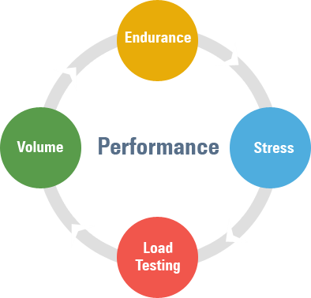

<!DOCTYPE html>
<html lang="en">

<head>
	<meta charset="utf-8">
	<title>Clavrit</title>
	<meta name="viewport" content="width=device-width, initial-scale=1.0" />
	<meta name="description" content="" />
	<meta name="author" content="http://webthemez.com" />
	<!-- css -->
	<link href="css/bootstrap.min.css" rel="stylesheet" />
	<link rel="stylesheet" href="https://unpkg.com/aos@next/dist/aos.css" />
	<link href="css/fancybox/jquery.fancybox.css" rel="stylesheet">
	<!-- <link href="css/jcarousel.css" rel="stylesheet" /> -->
	<link href="css/flexslider.css" rel="stylesheet" />
	<link href="css/style.css" rel="stylesheet" />
	<link href="css/blog.css" rel="stylesheet" />
	<link href="css/footer.css" rel="stylesheet" />

	<!-- HTML5 shim, for IE6-8 support of HTML5 elements -->
	<!--[if lt IE 9]>
      <script src="http://html5shim.googlecode.com/svn/trunk/html5.js"></script>
    <![endif]-->

</head>

<body>
	<div id="wrapper">
		<!-- start header -->
		<header>
			<div class="navbar navbar-default navbar-static-top">
				<div class="container">
					<div class="navbar-header">
						<button type="button" class="navbar-toggle" data-toggle="collapse"
							data-target=".navbar-collapse">
							<span class="icon-bar"></span>
							<span class="icon-bar"></span>
							<span class="icon-bar"></span>
						</button>
						<a class="navbar-brand" href="index.html"></a>
					</div>
					<div class="navbar-collapse collapse ">
						<ul class="nav navbar-nav">
							<li><a href="index.html">Home</a></li>
							<li><a href="services.html">Services</a></li>
							<!-- <li><a href="portfolio.html">Portfolio</a></li> -->
							<!-- <li class="active"><a href="pricing.html">Resources</a></li> -->
							<li class="dropdown">
								<a style="background-color: transparent; color: white" class="dropdown-toggle"
									data-toggle="dropdown" href="#">Resources <span class="caret"></span></a>
								<ul class="dropdown-menu">
									<li>
										<a class="d2" href="blogs.html">Blogs</a>
									</li>
									<!-- <li><a class="d2" href="caseStudies.html">Case Studies</a></li> -->
								</ul>
							</li>
							<li class="dropdown">
								<a style="background-color: transparent; color: white" class="dropdown-toggle"
									data-toggle="dropdown" href="#">Company <span class="caret"></span></a>
								<ul class="dropdown-menu">
									<li>
										<a class="d2" href="about.html">About Us</a>
									</li>
									<li><a class="d2" href="career.html">Career</a></li>
									<li><a class="d2" href="contact.html">Contact Us</a></li>
								</ul>
							</li>
						</ul>
					</div>
				</div>
			</div>
		</header><!-- end header -->
		<section id="inner-headline" style="padding: 0%;">
			<div class="container">
				<div class="row">
					<div class="col-lg-12">
						<h2 class="pageTitle">Blogs</h2>
					</div>
				</div>
			</div>
		</section>

		<div style="background-color: white; width: 100%; padding: 0%;" class="container">
			<div style="font-size: large;" class="col-md-9 col-md-offset-2 col-xs-20">
				<div style="font-size: medium;" class="mainheading">

					<!-- Begin Top Meta -->
					<!-- <div class="row post-top-meta">
						<div class="col-md-2 align">
							
						</div>
						<div class="col-md-10 col-sm-6 flex-container">
							<p>Mallika Gopal</p>
							<span class="author-description">I’m Mallika Gopal, but people call me “Mallika” I’m a
								backend developer, and I specialize in efficient Springboot Java apps. I care deeply
								about creating secure REST APIs and work closely with frontend team which results in
								productive outcomes.</span>
							<span class="post-date">08 April 2024</span><span class="dot"></span><span
								class="post-read">6 min read</span>
						</div>
					</div> -->
					<!-- End Top Menta -->

					<h1 class="posttitle">Unravelling the Mysteries of Performance Testing in Software Development</h1>

				</div>


				<!-- Begin Post Content -->
				<div class="article-post">
					<p>
						Performance testing in software development is a crucial aspect that often remains shrouded
						 in mystery for many developers and organisations. However, understanding its principles and
						  practices is essential for delivering high-quality software that meets user expectations. 
						  Let's unravel the mysteries surrounding performance testing: 
						  <br>
						 <h4 style="margin-bottom: 5px;"><b>Definition:</b></h4>  Performance testing is the process of evaluating the speed, responsiveness, 
						  stability, and scalability of a software application under various workloads.  
					</p>

					<h3 style="margin-bottom: 10px;">Types of Performance Testing: </h3>

						<p style="margin-bottom: 0px;"><span style="font-size: 18px;" class="abc">Load Testing:</span>Assessing how the system behaves under expected loads.</p>
						<p style="margin-bottom: 0px;"><span  style="font-size: 18px;"  class="abc">Stress Testing:</span> Evaluating system behaviour beyond normal operational capacity, often to the point of failure. </p>
						<p style="margin-bottom: 0px;"><span  style="font-size: 18px;"  class="abc">Endurance Testing:</span> Ensuring the system can handle expected loads over a prolonged period.</p>
						<p style="margin-bottom: 0px;"><span  style="font-size: 18px;"  class="abc">Scalability Testing:</span> Determining how well the system scales with increasing load signal. </p>
						<p style="margin-bottom: 0px;"><span  style="font-size: 18px;"  class="abc">Volume Testing:</span> Testing the system with large volumes of data to assess its performance.</p>
					
					
					
					

					<h3 style="margin-bottom: 10px;">Key Metrics: </h3>
					<p style="margin-bottom: 0px;"><span style="font-size: 18px;" class="abc">Response Time: </span> The time taken by the system to respond to a user request. </p>
					<p style="margin-bottom: 0px;"><span style="font-size: 18px;" class="abc">Throughput:</span>  The number of transactions processed by the system per unit of time.</p>
					<p style="margin-bottom: 0px;"><span style="font-size: 18px;" class="abc">Resource Utilization:</span>  Monitoring CPU, memory, disk I/O, and network usage. </p>
					<p style="margin-bottom: 0px;"><span style="font-size: 18px;" class="abc">Error Rate: </span>The rate of errors encountered during testing.</p>	
					
					<h3 style="margin-bottom: 10px;">Tools and Technologies:</h3>
					<p  style="margin-bottom: 0px;"><span style="font-size: 18px;" class="abc">Load Testing Tools:</span>JMeter, LoadRunner, Gatling, Apache Bench.</p>	
					<p  style="margin-bottom: 0px;"><span style="font-size: 18px;" class="abc">Profiling Tools: </span>Visual, Your Kit, AppDynamics, New Relic. </p>
					<p  style="margin-bottom: 0px;"><span style="font-size: 18px;" class="abc">Monitoring Tools: </span> Prometheus, Grafana, Nagios, Datadog. </p>
					<p  style="margin-bottom: 0px;"><span style="font-size: 18px;" class="abc">Test Environment Setup:</span>Replicate production-like environments.
						Use realistic data and traffic patterns. Emulate network conditions to simulate real-world scenarios.</p>
					
					<h3 style="margin-bottom: 10px;">Test Scenarios: </h3>
					<span>Identify critical user flows. Define expected load patterns. Consider peak usage times and seasonal variations.</span>
					 
					<h4 style="margin-bottom: 10px;">Interpreting Results: </h4>
					<span>
						Compare against predefined benchmarks. Analyse trends over time. Identify bottlenecks and performance degradation.
					</span>
					 
				
					<h4 style="margin-bottom: 10px;">Importance of Automation:  </h4>
					<span>
						Automate test scenarios for repeatability and consistency. Continuous integration and delivery pipelines should include performance tests. 
					</span>
				
					
					<h4 style="margin-bottom: 10px;">Collaboration and Communication:</h4>
					<span>
						Involve stakeholders early in the performance testing process. Share findings transparently to align expectations and priorities. 
					</span>
					
					
					<h4 style="margin-bottom: 10px;">Continuous Improvement: </h4>
					<span>Use performance testing results to guide optimisation efforts. Iterate test scenarios based on evolving user needs and usage patterns. 
						By demystifying performance testing and integrating it into the software development lifecycle, teams can proactively address performance issues, enhance user experience, and build robust, scalable applications. </span>
					
					<br><br>
					<span> <b>Let's consider an e-commerce website as a real-time example of performance testing.</b></span>
                  
					<h3 style="margin-bottom: 10px;">Scenario: </h3>
					<span>Imagine you're working for a company that operates an e-commerce platform where users can browse products, add them to their cart, and complete purchases. As the holiday season approaches, the company expects a surge in traffic due to increased online shopping activity. Your task is to conduct performance testing to ensure the website can handle the anticipated load without compromising user experience. </span>
					 <br> <br>

					<pre>
@Table("products")
public class Product {

	@Id
	private Long id;
	private String name;
	private String description;
	private double value;

	public Long getId() {
		return id;
	}
	public void setId(Long id) {
		this.id = id;
	}
	public String getName() {
		return name;
	}
	public void setName(String name) {
		this.name = name;
	}
	public String getDescription() {
		return description;
	}
	public void setDescription(String description) {
		this.description = description;
	}
	public double getValue() {
		return value;
	}
	public void setValue(double value) {
		this.value = value;
	}
	public Product() {
		super();
	}
	public Product(Long id, String name, String description, double value) {
		super();
		this.id = id;
		this.name = name;
		this.description = description;
		this.value = value;
	}
}
</pre>

					<h4 style="margin-bottom: 10px;">Controller:</h4>
					<pre>
@RestController
public class ProductController {

	@Autowired
	ProductService productService;

	@GetMapping("/allproducts")
	public Flux<Product> getAllProducts() {
		return productService.getAllProducts();
	}
	@GetMapping("/getproductbyid/{id}")
	public Mono<Product> getProductById(@PathVariable Long id) {
		return productService.getProductById(id);
	}
	@DeleteMapping("/deleteproductbyid{id}")
	public Mono<Void> deleteProductById(@PathVariable Long id) {
		return productService.deleteProduct(id);
	}
	@PostMapping("/saveproduct")
	public Mono<Product> saveProduct(@RequestBody Product product) {
		return productService.saveProduct(product);
	}
}
</pre>

					<h4 style="margin-bottom: 10px;">Repository:</h4>
					<pre>
import org.springframework.data.repository.reactive.ReactiveCrudRepository;

public interface ProductRepository extends ReactiveCrudRepository<Product, Long> {
}
</pre>

					<h4  style="margin-bottom: 10px;">Service:</h4>
					<pre>
@Service
public class ProductService {
 
	@Autowired
	ProductRepository productRepository;
 
	public Flux<Product> getAllProducts() {
		return productRepository.findAll();
	}
	public Mono<Product> getProductById(Long id) {
		return productRepository.findById(id);
	}
	public Mono<Void> deleteProduct(Long id) {
		return productRepository.deleteById(id);
	}
	 public Mono<Product> saveProduct(Product product) {
	        product.setId(null);
	        return productRepository.save(product);
	}
}
</pre>

					<h4  style="margin-bottom: 10px;">Pom.xml:</h4>
					<pre>
<xmp style="margin-top:0px ; margin-bottom: 0px;"><?xml version="1.0" encoding="UTF-8"?>
<project xmlns="http://maven.apache.org/POM/4.0.0"
	xmlns:xsi="http://www.w3.org/2001/XMLSchema-instance"
	xsi:schemaLocation="http://maven.apache.org/POM/4.0.0 https://maven.apache.org/xsd/maven-4.0.0.xsd">
	<modelVersion>4.0.0</modelVersion>

	<parent>
		<groupId>org.springframework.boot</groupId>
		<artifactId>spring-boot-starter-parent</artifactId>
		<version>3.1.5</version>
		<relativePath />
	</parent>

	<groupId>com.ill.test</groupId>
	<artifactId>sqlrx</artifactId>
	<version>0.0.1-SNAPSHOT</version>
	<name>sqlrx</name>
	<description>MySQL Rx Test</description>

	<properties>
		<project.build.sourceEncoding>UTF-8</project.build.sourceEncoding>
		<project.reporting.outputEncoding>UTF-8</project.reporting.outputEncoding>
		<java.version>17</java.version>

		<mysql-driver.version>1.0.1</mysql-driver.version>
	</properties>

	<dependencies>
		<dependency>
			<groupId>org.springframework.boot</groupId>
			<artifactId>spring-boot-starter-webflux</artifactId>
		</dependency>

		<dependency>
			<groupId>org.springframework.boot</groupId>
			<artifactId>spring-boot-starter-data-r2dbc</artifactId>
		</dependency>
		<dependency>
			<groupId>io.asyncer</groupId>
			<artifactId>r2dbc-mysql</artifactId>
			<version>${mysql-driver.version}</version>
		</dependency>
		<dependency>
			<groupId>org.projectlombok</groupId>
			<artifactId>lombok</artifactId>
			<optional>true</optional>
		</dependency>
		<dependency>
			<groupId>org.springframework.boot</groupId>
			<artifactId>spring-boot-devtools</artifactId>
			<scope>runtime</scope>
			<optional>true</optional>
		</dependency>
		<dependency>
			<groupId>org.springframework.boot</groupId>
			<artifactId>spring-boot-starter-test</artifactId>
			<scope>test</scope>
		</dependency>
		<dependency>
			<groupId>io.projectreactor</groupId>
			<artifactId>reactor-test</artifactId>
			<scope>test</scope>
		</dependency>
	</dependencies>

	<build>
		<defaultGoal>clean package</defaultGoal>

		<plugins>
			<plugin>
				<groupId>org.apache.maven.plugins</groupId>
				<artifactId>maven-enforcer-plugin</artifactId>
				<executions>
					<execution>
						<id>enforce-maven</id>
						<goals>
							<goal>enforce</goal>
						</goals>
						<configuration>
							<rules>
								<banDuplicatePomDependencyVersions />
								<requireMavenVersion>
									<version>3.6.3</version>
								</requireMavenVersion>
							</rules>
						</configuration>
					</execution>
				</executions>
			</plugin>
			<plugin>
				<groupId>org.apache.maven.plugins</groupId>
				<artifactId>maven-compiler-plugin</artifactId>
				<configuration>
					<encoding>${project.build.sourceEncoding}</encoding>
					<source>${java.version}</source>
					<target>${java.version}</target>
					<compilerArgument>-Xlint:all</compilerArgument>
					<showWarnings>true</showWarnings>
					<showDeprecation>true</showDeprecation>
				</configuration>
			</plugin>

			<plugin>
				<groupId>org.springframework.boot</groupId>
				<artifactId>spring-boot-maven-plugin</artifactId>
				<configuration>
					<excludes>
						<exclude>
							<groupId>org.projectlombok</groupId>
							<artifactId>lombok</artifactId>
						</exclude>
					</excludes>
				</configuration>
			</plugin>
		</plugins>
	</build>	
</project></xmp></pre>

					<h4  style="margin-bottom: 10px;">Application.properties:</h4>
					<pre>
spring.r2dbc.url=r2dbc:mysql://localhost:3306/reactive
spring.r2dbc.username=root
spring.r2dbc.password=root

logging.level.org.springframework.data.repository=DEBUG
logging.level.org.springframework.r2dbc.core=DEBUG
</pre>
					
					
					<h3 style="margin-bottom: 10px;">Performance Testing Approach: </h3>
					<p style="margin-bottom: 0px;"><span style="font-size: 18px;" class="abc"><b>Load Testing:</b></span> Simulate a large number of virtual users accessing the website simultaneously.Vary the load to mimic different scenarios, such as peak shopping hours 
						and promotional events.Measure response times, throughput, and server resource utilization under various load conditions.</p>
					<p style="margin-bottom: 0px;"><span  style="font-size: 18px;" class="abc"><b>Stress Testing:</b> </span> Gradually increase the load beyond normal capacity to determine the breaking point. Monitor system behaviour and identify performance bottlenecks,
						such as slow page load times or server errors. Assess how the website recovers from stress and whether it gracefully degrades under extreme loads. </p>
					<p style="margin-bottom: 0px;"><span  style="font-size: 18px;" class="abc"><b>Endurance Testing:</b> </span> Run tests continuously over an extended period to ensure the website can sustain high traffic levels without performance degradation.
						Monitor for memory leaks, database connection issues, or other issues that may arise over time. </p>
					 <p style="margin-bottom: 0px;">
						<span  style="font-size: 18px;" class="abc"><b>Scalability Testing: </b></span> Evaluate how the website scales with increasing load by adding more servers or resources. 
					Determine the optimal configuration to handle peak loads efficiently without over-provisioning. 
					 </p>

					<h3 style="margin-bottom: 10px;">Results and Analysis: </h3>
					 <p style="margin-bottom: 0px;"><span style="font-size: 18px;" class="abc"><b>Response Time: </b></span> Ensure that pages load quickly and transactions are processed within acceptable time frames. 
						Identify any slow-performing pages or actions that may impact user experience. </p>
					<p  style="margin-bottom: 0px;"><span style="font-size: 18px;" class="abc"><b>Throughput:</b></span> Measure the number of transactions processed per second to ensure the system can handle the
						expected load. </p>
					<p  style="margin-bottom: 0px;"><span style="font-size: 18px;" class="abc"><b>Server Resource Utilization:</b></span>Monitor CPU, memory, disk I/O, and network usage to identify resource bottlenecks. 
						Optimize server configurations or allocate additional resources as needed.</p>

					<p  style="margin-bottom: 0px;"><span style="font-size: 18px;" class="abc"><b>Error Rate: </b></span>Monitor for server errors, timeouts, or other issues that may arise under heavy load. 
						Investigate the root cause of errors and implement fixes to improve system stability. </p>

					<h3 style="margin-bottom: 10px;">Conclusion:</h3>
						<span>By conducting performance testing on the e-commerce website, you can ensure that it can handle the anticipated increase in traffic during the holiday season without experiencing slowdowns or downtime. This proactive approach helps maintain a positive user experience, minimize revenue loss due to performance issues, and build trust and loyalty among customers. </span>
				</div>
				<!-- End Post Content -->
				<br><br>
			</div>
		</div>
		<footer style="padding-top: 20px;">
            <div class="container">
                <div class="row" style="margin: 0px;">
                    <div class="col-lg-4" id="contact">
                        <div class="widget">
                            <h5 class="widgetheading">Our Contact</h5>
        
                            <address style="margin-bottom: 0px;">
                              <strong>Clavrit Digital Solutions</strong><br />
                              18, Institutional Area,Prem Puri, Sector 32,<br>
                              Gurugram, Haryana,122001-India
                            </address>
             
                            <p>
                              <i class="icon-phone"></i>
                              +91-9810167782<br />
                    <i class="icon-phone"></i> 0124- 7177829 <br />
                              <i class="icon-envelope-alt"></i>
                              info@clavrit.com
                            </p>
                        </div>
                    </div>
        
                    <div class="col-lg-2" id="quickLinks">
                        <div class="widget">
                            <h5 class="widgetheading">Quick Links</h5>
        
                            <ul class="link-list">
                              <li>
                                <a href="services.html">Services</a>
                              </li>
                              <l >
                                <a href="about.html">About Us</a>
                              </li>
                              <li>
                                <a href="blogs.html">Blogs</a>
                              </li>
                              <li>
                                <a href="career.html">Career</a>
                              </li>
                              <li>
                                <a href="contact.html">Contact us</a>
                              </li>
                            </ul>
                        </div>
                    </div>
        
                    <div class="col-lg-4" id="contact">
                        <div class="widget">
                            <h5 class="widgetheading">Latest posts</h5>
        
                            <ul class="link-list">
                              <li>
                                <a href="reactivejava.html"
                                  >Reactive Programming Through Java</a
                                >
                              </li>
             
                              <li>
                                <a href="SAPclassification.html"
                                  >Classification Systems In SAP Commerce</a
                                >
                              </li>
        
                    <li>
                      <a href="SRGAN.html"
                        >Revolutionizing Image Enhancement: A Deep Dive into SRGAN</a
                      >
                    </li>

                    <li>
                        <a href="ExploratoryTesting.html"
                          >Exploratory Testing: Unleashing Creativity in Quality Assurance</a
                        >
                      </li>
                            </ul>
                        </div>
                    </div>
                    
                    <div class="col-lg-2"  id="quickLinks">
                      <div class="widget">
                          <h5 class="widgetheading">Quick Links</h5>
        
                          <ul class="social-network" style="padding-left: 0px;">
                            <li>
                              <a
                                class="fa fa-facebook"
                                data-placement="top"
                                href="https://www.facebook.com/share/iBmat7SDtXvuHWrB/?mibextid=hu50Ix"
                                style="font-style: italic"
                                title="Facebook"
                              ></a>
                            </li>
           
                            <li>
                              <a
                                class="fa fa-linkedin"
                                data-placement="top"
                                href="https://www.linkedin.com/company/clavrit/"
                                style="font-style: italic"
                                title="Linkedin"
                              ></a>
                            </li>
           
                            <li>
                              <a
                                class="fa fa-instagram"
                                data-placement="top"
                                href="https://www.instagram.com/clav.ritdigitalsolutions?igsh=MWpnNDR2NTd2OGVybg=="
                                style="font-style: italic"
                                title="Instagram"
                              ></a>
                            </li>
                          </ul>
                      </div>
                  </div>
                  <div class="col-lg-4"></div>
                    
                </div>
            </div>
        
            <div id="sub-footer" style="margin-top: 0px;padding-top: 0px;">
                <div class="container">
                    <div class="row" style="margin-bottom: 0;">
                        <div class="col-lg-12">
                          <div class="copyright" style="text-align: center;">
                            <p>
                              <span>&copy; 2019. Clavrit Digital Solutions. All Rights Reserved.</span>
                            </p>
                          </div>
                        </div>
        
                     
                     
                    </div>
                </div>
            </div>
        </footer> 
	</div>
	<a href="#" class="scrollup"><i class="fa fa-angle-up active"></i></a>
	<!-- javascript
    ================================================== -->
	<!-- Placed at the end of the document so the pages load faster -->
	<script src="js/jquery.js"></script>
	<script src="js/jquery.easing.1.3.js"></script>
	<script src="https://unpkg.com/aos@next/dist/aos.js"></script>
	<script>
		AOS.init();
	</script>
	<script src="js/bootstrap.min.js"></script>
	<script src="js/jquery.fancybox.pack.js"></script>
	<script src="js/jquery.fancybox-media.js"></script>
	<script src="js/portfolio/jquery.quicksand.js"></script>
	<script src="js/portfolio/setting.js"></script>
	<script src="js/jquery.flexslider.js"></script>
	<script src="js/animate.js"></script>
	<script src="js/custom.js"></script>
</body>

</html>